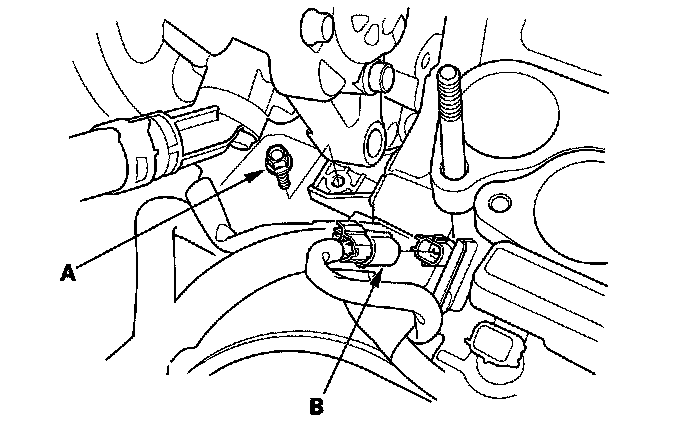
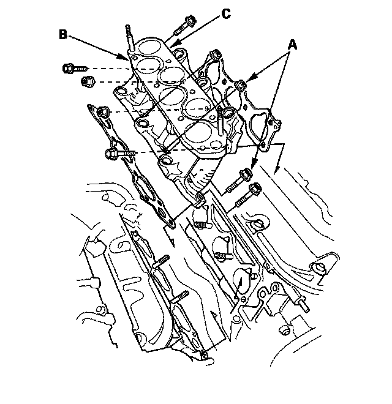
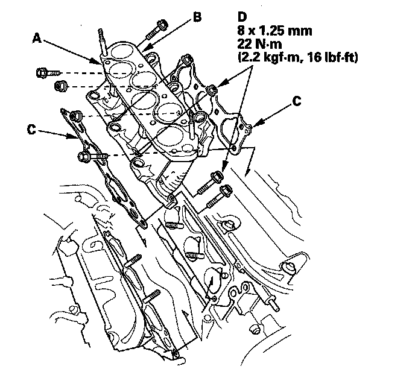
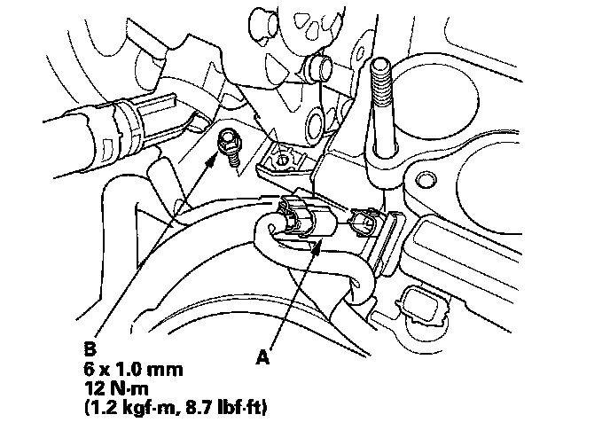

Injector Base Removal and Installation
Injector Base Removal and InstallationRemoval
1. Relieve the fuel pressure.
2. Remove the power steering (P/S) pump and power steering line bracket.
3. Remove the intake manifold.
4. Remove the injectors.
5. Remove the harness bracket mount bolt (A) and the knock sensor connector (B).

6. Remove the injector base mount bolts/nuts (A), then remove the front injector base (B) and rear injector base (C).

Installation
1. Install the front injector base (A) and rear injector base (B) with new gaskets (C), and tighten the bolts/nuts (D) in a crisscross pattern in two or three steps, beginning with the inner nuts.
NOTE: Front injector base gasket is different from rear one. Do not mix injector base gasket types.

2. Install the knock sensor connector (A) and harness bracket mount bolt (B).

3. Install the injectors.
4. Install the intake manifold.
5. Install P/S pump and P/S line bracket.
6. Turn the ignition switch ON (II), but do not operate the starter. After the fuel pump runs about 2 seconds, the fuel pressure in the fuel line rises. Repeat this two or three times, then check for fuel leaks.